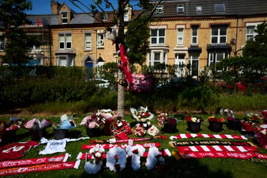

Mourners are set to gather and honour Liverpool footballer Diogo Jota at a wake in Portugal on Friday morning, a local parish priest has said.
Jota and his younger brother, André Silva, died in a car accident in Zamora, Spain , in the early hours of Thursday morning. Less than two weeks ago Jota, who was 28, married his long-term partner Rute Cardoso. The couple have three children together.
José Manuel Macedo, parish priest at the Igreja Matriz de Gondomar in São Cosme, said that a wake for the brothers was taking place at the nearby Capela da Ressurreição before their funeral at the Igreja Matriz on Saturday at 10am.
Liverpool’s “heartbroken” players have spoken of their pain in paying tribute to their teammate. Captain Virgil van Dijk said on Instagram he was “absolutely devastated and in total disbelief.” The Dutch defender wrote in a post alongside a picture of Jota with the Premier League trophy: “What a human being, what a player, but most importantly what an unbelievable family man.
“You meant so much to all of us and you always will! For your family to lose two sons, a husband and a father is just unimaginable. So cruel and unfair. My heart is breaking for all of your beautiful family, for Rute and for your kids. I promise you that in these difficult times and beyond we will always be there for your family.
“A champion forever, number 20 forever. It’s been a privilege to have stood by your side on the pitch, and to have been your friend off it. We will miss you beyond words and never forget you. Your legacy will live on, we will make sure of it! Rest in perfect peace Diogo & André.”
Andy Robertson, one of the players with the longest association with Jota, also paid an emotional tribute. “The ones I’m thinking about most right now are the family. Their loss is too much to bear. I’m so sorry that they have lost two such precious souls – Diogo and André,” he posted on Instagram. “For the team and the club, we’ll try to cope with this together … however long that takes.
“For me, I want to talk about my mate. My buddy. The bloke I loved and will miss like crazy. I could talk about him as a player for hours, but none of that feels like it matters right now. It’s the man. The person. He was such a good guy. The best. So genuine. Just normal and real. Full of love for the people he cared about. Full of fun. He was the most British foreign player I’ve ever met. I can’t believe we’re saying goodbye. It’s too soon, and it hurts so much. But thank you for being in my life, mate – and for making it better.”
Liverpool fans gather outside Anfield to lay flowers and pay their respects to Diogo Jota.Photograph: Christopher Thomond/The Guardian
“Heartbroken” former manager Jürgen Klopp, for whom his Christian faith has played a big part in his life, wrote on Instagram : “This is a moment where I struggle! There must be a bigger purpose! But I can’t see it!”
Liverpool, who are supporting Jota’s family, have opened a book of condolence, both physical in the Anfield Road Stand and online, lowered flags to half-mast and closed all stores and the museum and suspended all tours until Monday.
Uefa announced a moment of silence would be observed at Women’s Euro 2025 matches on Thursday and Friday, while the “devastated” Portuguese Football Federation said: “Diogo Jota was not only a fantastic player … but also an extraordinary person who was respected by all his team-mates and opponents. We have lost two champions. Their deaths represent irreparable losses for Portuguese football, and we will do everything we can to honour their legacy every day.”
Fans left wreaths, scarves and shirts at a makeshift shrine outside Anfield, with the deputy prime minister Angela Rayner, attending a conference in Liverpool, among those to lay flowers in person. There were similar scenes outside Molineux in Wolverhampton, where Jota played before his move to Merseyside.
Local police, investigating the accident at 12.30am on Thursday in the municipality of Cernadilla, Zamora, said: “In the absence of a conclusion of the experts’ evidence, everything points that a car left the road, due to a tyre blowout while overtaking.”
Jota won 49 caps and scored 14 goals for Portugal , last month winning the Nations League for a second time. He scored 65 goals in 182 Liverpool appearances, nine coming last season as Arne Slot’s side won the Premier League title, having previously lifted the FA Cup and Carabao Cup.